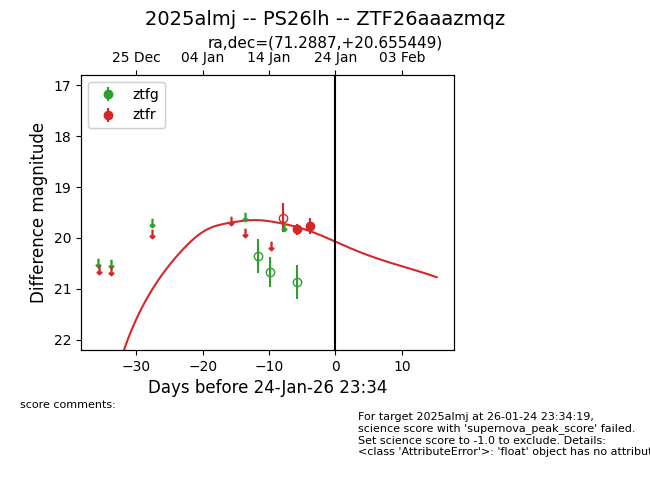
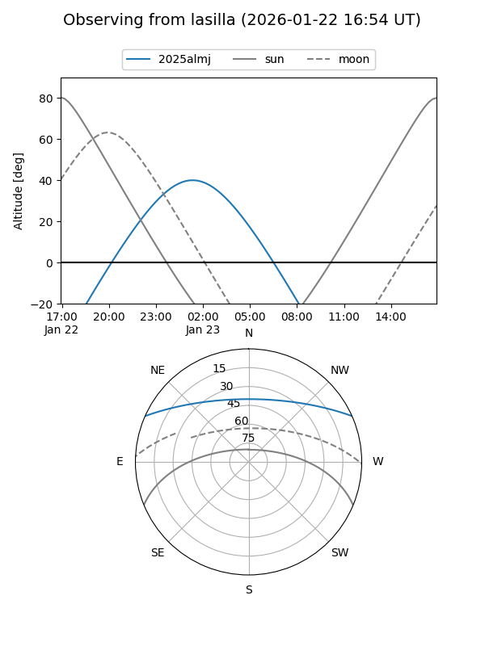
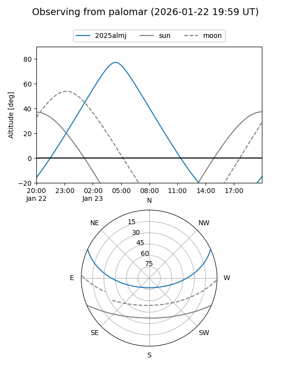
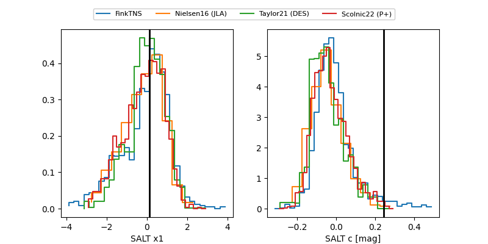

2025almj
Target 2025almj at 2026-01-25 04:26
Aliases and brokers:
FINK: link
Lasair: link
ALeRCE: link
TNS: link
YSE: link
alt names
ZTF26aaazmqz (ztf,fink_ztf)
2025almj (tns,yse)
PS26lh (panstarrs)
Coordinates:
equatorial (ra, dec) = 71.2887,+20.65545
equatorial (HMS+DMS) = 04:45:09.29,+20:39:19.62
galactic (l, b) = (178.9522,-15.97125)
Flags:
Photometry:
last ztfr=19.77
2 ztfr detections
Lightcurve

Visibility


Additional plots
